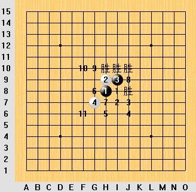

（ D4局 ）山口规则的花月
#1 （ D4局 ）山口规则的花月 作者：失落刀 发表时间：2009-8-17 22:36:28
花月有10个5，哪些胜？哪些败？
#2 Re:山口规则的花月 作者：胆小的骆驼 发表时间：2009-8-17 23:27:32
B，F，H，I必胜吧，刚拆了下个人感觉：
E点比较平衡，黑好下点吧
=======上图对应的爱五子棋谱代码如下，以便你拆解：========
h8h9i9i8h7g7g10
======================================================
A点感觉白很优能不能必胜就不知道了
=======上图对应的爱五子棋谱代码如下，以便你拆解：========
h8h9i9i8f6g7j7g10
======================================================
C点也是白优吧
=======上图对应的爱五子棋谱代码如下，以便你拆解：========
h8h9i9i8g6j7g10g7
======================================================
D点感觉比较平衡或许黑好控制点
=======上图对应的爱五子棋谱代码如下，以便你拆解：========
h8h9i9i8h6g7i7
======================================================
G点感觉白优
=======上图对应的爱五子棋谱代码如下，以便你拆解：========
h8h9i9i8i6g7j6g8k6l6g9i7f7
======================================================
J点感觉黑很难下
=======上图对应的爱五子棋谱代码如下，以便你拆解：========
h8h9i9i8k6g8h10g7
======================================================
［ 失落刀 于 2009-8-18 3:19:50 时花20金币送鲜花一朵］
#3 Re:山口规则的花月 作者：失落刀 发表时间：2009-8-18 3:19:21
=======上图对应的爱五子棋谱代码如下，以便你拆解：========
h8h9i9i8f6g7
======================================================
5A记忆中是白必胜。有难杀的吗？
#4 Re:山口规则的花月 作者：屏蔽 发表时间：2009-8-18 13:17:49
B、F、H、I都是必胜
刚才简单看了下A，应该是白优
E应该趋于平衡
D应该是白优，不过优势很有限，算成平衡也没事
从世锦赛的对局来看，C是白大优，J黑白应该可战
G应该也是白优好像
［ 失落刀 于 2009-8-18 19:17:33 时花20金币送鲜花一朵］
#5 Re:山口规则的花月 作者：日出333 发表时间：2009-8-18 14:51:47
支持一下。。
#6 Re:山口规则的花月 作者：黄药师 发表时间：2009-8-18 15:24:55
热烈欢迎花月重新回到大家的视线里面来！#7 Re:山口规则的花月 作者：淡红的秋樱 发表时间：2009-8-18 17:42:48
A点，通游星白必胜，胜法论坛找。
B 黑必胜
C 白大优或必胜
D 混战，由于空间的关系，这个点还比较有利。参见论坛战A组，白棋输了一盘呢
E 平衡，黑棋开局略有先手。
F 通寒恒星必胜
G 平衡，个人倾向于黑略好。
H，I花月必胜
J 混战，结论未知
［ 失落刀 于 2009-8-18 18:15:30 时花20金币送鲜花一朵］
#8 Re:山口规则的花月 作者：潇洒 发表时间：2009-8-18 21:53:30
观点基本同4楼
#9 Re:山口规则的花月 作者：极地剑客 发表时间：2009-8-19 7:12:50
发现黄药师丑美了也~换PP了~#10 Re:山口规则的花月 作者：nara 发表时间：2009-8-19 7:29:27
7楼分析的挺好！学习了！
#11 Re:山口规则的花月 作者：失落刀 发表时间：2009-8-19 19:19:47
=======上图对应的爱五子棋谱代码如下，以便你拆解：========
h8h9i9i8g6
======================================================
研究1
#12 Re:山口规则的花月 作者：失落刀 发表时间：2009-8-19 19:20:56
=======上图对应的爱五子棋谱代码如下，以便你拆解：========
h8h9i9i8h7
======================================================
研究2
#13 Re:山口规则的花月 作者：失落刀 发表时间：2009-8-19 19:21:35
=======上图对应的爱五子棋谱代码如下，以便你拆解：========
h8h9i9i8h6
======================================================
研究3
#14 Re:山口规则的花月 作者：失落刀 发表时间：2009-8-19 19:22:16
=======上图对应的爱五子棋谱代码如下，以便你拆解：========
h8h9i9i8i6
======================================================
研究4
#15 Re:山口规则的花月 作者：屏蔽 发表时间：2009-8-19 20:15:39
关于这一点：
=======上图对应的爱五子棋谱代码如下，以便你拆解：========
h8h9i9i8i6
======================================================
因为联想起世锦赛的对局，我意图先尝试其他的黑7：
=======上图对应的爱五子棋谱代码如下，以便你拆解：========
h8h9i9i8i6g7j6g8
======================================================
针对这个黑7，我意识到白8是可能的想法
此外，对于一套常见的变化：
=======上图对应的爱五子棋谱代码如下，以便你拆解：========
h8h9i9i8i6g7j7f7g8h5g6j6
======================================================
需要考察黑棋到底能进攻成什么样子，或者直接进行控制，要么就直接12-H6进行反击。
#16 Re:山口规则的花月 作者：江南新绿 发表时间：2009-8-19 22:58:06
to 15楼，白10虽然是比较好的下法，但是此时黑棋需要考虑的是先手和空间优势两者不能得兼。让出先手就可以获得比较好的空间位置。由于空间位置比较高，虽然暂时比较痛苦，但是白棋是无法彻底必胜，黑棋的高位优势，依然存在成杀的可能。对于白棋也是一样，如果黑棋追求先手的话，就无法彻底消除白棋高位的空间优势#17 Re:山口规则的花月 作者：淡红的秋樱 发表时间：2009-10-13 16:23:49
=======上图对应的爱五子棋谱代码如下，以便你拆解：========
h8h9i9i8k6j10k7k5l6m5j6i6l8i5l7l9l5l4m8i7i4j5j8h10k8n8m6
======================================================
花月7手秒杀。11届世锦赛 Black: Zowadova Monika 1
White: Pajuste Renee 0 Round 4, d4, -, 5a=6, 7, 23, 25, Yamaguchi rule
#18 Re:山口规则的花月 作者：潇洒 发表时间：2009-10-19 17:31:15
=======上图对应的爱五子棋谱代码如下，以便你拆解：========
h8h9i9i8k6
======================================================
=======上图对应的爱五子棋谱代码如下，以便你拆解：========
h8h9i9i8k5
======================================================
#19 Re:山口规则的花月 作者：潇洒 发表时间：2009-10-19 17:31:52
=======上图对应的爱五子棋谱代码如下，以便你拆解：========
h8h9i9j10
======================================================
这个4也讨论下
#20 Re:山口规则的花月 作者：淡红的秋樱 发表时间：2009-10-23 16:34:40
=======上图对应的爱五子棋谱代码如下，以便你拆解：========
h8h9i9i8k5g9a1g8
======================================================
基本上白棋就这两种走法
=======上图对应的爱五子棋谱代码如下，以便你拆解：========
h8h9i9i8k5g9g10j10k7h10i11j9j11k10l11k11l10k6j6
======================================================
这个变化似乎是黑棋优势了
#21 Re:（ D4局 ）山口规则的花月 作者：淡红的秋樱 发表时间：2009-10-27 17:12:26
花月10打估计没有问题
#22 Re:（ D4局 ）山口规则的花月 作者：淡红的秋樱 发表时间：2009-10-27 20:52:21
=======上图对应的爱五子棋谱代码如下，以便你拆解：========
h8h9g9g8k9
======================================================
拿来主义的花月。
#23 Re:（ D4局 ）山口规则的花月 作者：流逝 发表时间：2010-1-19 3:33:40
花月打不出10打的 最多打9打 加上这个点
=======上图对应的爱五子棋谱代码如下，以便你拆解：========
h8h9i9i8k5
======================================================
［ 失落刀 于 2010-1-19 7:47:40 时奖励此帖[金币加 20 威望加1］
#24 Re:（ D4局 ）山口规则的花月 作者：流逝 发表时间：2010-1-19 4:01:27
=======上图对应的爱五子棋谱代码如下，以便你拆解：========
h8h9i9i8g8j7k6j10i6j6
======================================================
李一说的这个9看起来黑也不是太强
最强的9应该是下在10这里吧 之后黑优
另外这个5相对与3上面的5 是弱5
［此帖子已被 流逝 在 2010-1-19 4:32:16 编辑过］
［ 失落刀 于 2010-1-19 7:48:07 时花20金币送鲜花一朵］
#25 Re:（ D4局 ）山口规则的花月 作者：屏蔽 发表时间：2010-1-19 13:30:57
楼上那个9是日本名人战里面的
9-10的话尚不清楚具体情况
#26 Re:（ D4局 ）山口规则的花月 作者：屏蔽 发表时间：2010-1-19 14:08:27
四个确认的胜点
1：可能平衡，白6-J8/G8如何？
2：除了通回斜月外未见其他手段
3、4：白优
5、6、7：6-I8通4-I8局面结论
8：6-G9，7-J10，8-J11，基本白必胜了？
9：一个有黑必胜感觉的位置XD
10：黑不优（可以通回疏星）
11：白必胜（通游星）
其他点不太清楚
5-I6也可以通回4-I8
横11线上有可能有黑必胜的位置。
［此帖子已被 屏蔽 在 2010-1-19 14:13:23 编辑过］
［ 失落刀 于 2010-1-19 19:10:34 时花20金币送鲜花一朵］
［ 陶涛业余 于 2012-5-22 13:57:08 时花20金币送鲜花一朵］
#27 Re:（ D4局 ）山口规则的花月 作者：江南新绿 发表时间：2010-1-19 17:32:49
=======上图对应的爱五子棋谱代码如下，以便你拆解：========
h8h9i9g7g10i10
=====================================================
这个6没有杀出
［此帖子已被 江南新绿 在 2010-1-19 17:35:21 编辑过］
#28 Re:（ D4局 ）山口规则的花月 作者：潇洒 发表时间：2010-1-19 19:13:13
=======上图对应的爱五子棋谱代码如下，以便你拆解：========
h8h9i9g7g10i10f10
======================================================
推荐这个7
#29 Re:（ D4局 ）山口规则的花月 作者：江南新绿 发表时间：2010-1-19 20:22:15
=======上图对应的爱五子棋谱代码如下，以便你拆解：========
h8h9i9g7g10i10f10g9
======================================================
=======上图对应的爱五子棋谱代码如下，以便你拆解：========
h8h9j10i9g9i7i10g10
======================================================
这个目前最强变是？
［此帖子已被 江南新绿 在 2010-1-19 20:23:21 编辑过］
#30 Re:（ D4局 ）山口规则的花月 作者：江南新绿 发表时间：2010-1-19 20:58:48
=======上图对应的爱五子棋谱代码如下，以便你拆解：========
h8h9i9g7g10h10i11
======================================================
与溪月一路差别。
#31 Re:（ D4局 ）山口规则的花月 作者：淡红的秋樱 发表时间：2010-2-11 0:21:34
=======上图对应的爱五子棋谱代码如下，以便你拆解：========
h8h9i9g7k8i10g8
======================================================
很接近必胜的样子。这个有防不
#32 Re:（ D4局 ）山口规则的花月 作者：屏蔽 发表时间：2010-2-11 14:50:59
=======上图对应的爱五子棋谱代码如下，以便你拆解：========
h8h9i9i8h7g10f11j10f10f9e8i7
======================================================
11之后应该是怎样的？
#33 Re:（ D4局 ）山口规则的花月 作者：江南新绿 发表时间：2010-2-11 15:38:54
=======上图对应的爱五子棋谱代码如下，以便你拆解：========
h8h9i9i8h7g10f11j10f10f9e8j11e11g9e9e10g7f7g8f8
======================================================
#34 Re:（ D4局 ）山口规则的花月 作者：江南新绿 发表时间：2010-2-11 15:41:51
=======上图对应的爱五子棋谱代码如下，以便你拆解：========
h8h9i9g7k8i10g8j8i6h5
======================================================
这个怎么杀
#35 Re:（ D4局 ）山口规则的花月 作者：失落刀 发表时间：2010-3-13 23:37:56
=======上图对应的爱五子棋谱代码如下，以便你拆解：========
h8h9i9g7k8i10g8j8i6h5j7
======================================================
#36 Re:Re:（ D4局 ）山口规则的花月 作者：屏蔽 发表时间：2010-3-15 13:16:06
引用：
原文由 淡红的秋樱 发表于 2009-10-27 20:52:21 :
=======上图对应的爱五子棋谱代码如下，以便你拆解：========
h8h9g9g8k9
======================================================拿来主义的花月。
这个是什么结论？
#37 Re:（ D4局 ）山口规则的花月 作者：淡红的秋樱 发表时间：2010-3-15 14:28:06
=======上图对应的爱五子棋谱代码如下，以便你拆解：========
h8h9k9g8g9i10f7f10j10
======================================================
不能速胜。例如此图，彼此都有机会吧。
［此帖子已被 淡红的秋樱 在 2010-3-15 14:29:00 编辑过］
#38 Re:（ D4局 ）山口规则的花月 作者：屏蔽 发表时间：2010-4-9 17:49:01
=======上图对应的爱五子棋谱代码如下，以便你拆解：========
h8h9i9i8k6g8g9f10h10f11g10i10f7f12f13h7f8i11g7f6e9h6e8j11k12e6g6h11g11d9
======================================================
16手以下的形势如何？感觉白棋不错？
#39 Re:（ D4局 ）山口规则的花月 作者：江南新绿 发表时间：2010-4-10 12:15:22
38楼是东东和潇洒下的吧，等待最后结果。#40 Re:（ D4局 ）山口规则的花月 作者：棋心 发表时间：2010-6-19 14:28:57
=======上图对应的爱五子棋谱代码如下，以便你拆解：========
h8h9i9g7h11
======================================================
=======上图对应的爱五子棋谱代码如下，以便你拆解：========
h8h9i9g7i11
======================================================
=======上图对应的爱五子棋谱代码如下，以便你拆解：========
h8h9i9g7j11
======================================================
这3个5的结论？？